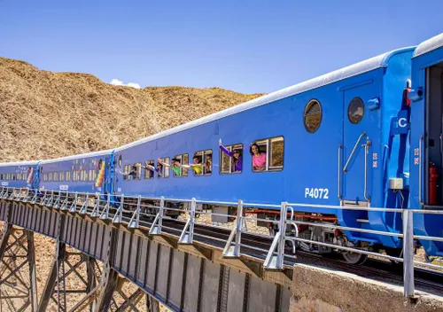

Sumérgete con el canto de la ciudad de Salta, viaja en nuestro tren a las nubes para ver la historia y la naturaleza de nuestra hermosa ciudad.
¡No te lo pierdas!Aquí van las imágenes.

Aquí va el contenido promocional.
Mapa de la plaza 9 de julio